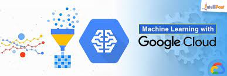
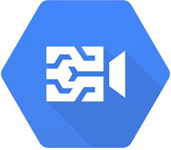
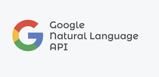
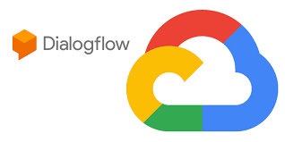
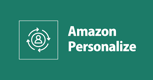

GCP SERVICES
Google Cloud Platform (GCP) offers a wide array of artificial intelligence (AI) and machine learning (ML) services that empower businesses to harness the power of data and develop intelligent applications. These services leverage Google's extensive expertise in AI and ML, making it easier for organizations to build, train, and deploy AI and ML models at scale.
-

Google Cloud AI Platform
This is a fully-managed platform for building, training, and deploying machine learning models. It provides tools and services to streamline the end-to-end machine learning workflow, including data preparation, model training, and model deployment.
-

Google Cloud Machine Learning Engine
This service allows you to build and deploy machine learning models using the popular TensorFlow framework. It provides managed training and prediction services.
-

Google Cloud AutoML
AutoML offers a suite of machine learning products with a focus on simplicity and ease of use. It includes AutoML Vision, AutoML Natural Language, and AutoML Tables, which enable you to create custom models for tasks like image classification, text classification, and structured data prediction.
-

Google Cloud Vision AI
This service allows you to build applications that can understand the content of images. It can be used for tasks like image classification, object detection, and text extraction from images.
-

Google Cloud Video AI
This service offers video analysis capabilities, enabling you to automatically recognize objects, entities, and activities in video content
-

Google Cloud Natural Language API
It provides natural language understanding capabilities, including sentiment analysis, entity recognition, and content classification.
-

Google Cloud Translation API
This API allows you to integrate language translation capabilities into your applications. It can translate text between languages and also offers language detection.
-

Google Cloud Speech-to-Text and Text-to-Speech
These services enable you to convert spoken language into written text and vice versa. They are useful for applications like transcription services and voice assistants.
-

Google Cloud Dialogflow
This is a conversational AI platform that allows you to build chatbots and natural language interfaces for applications and services.
-

Google Cloud Recommendations AI
It offers a service for building personalized recommendation systems, which can be used for e-commerce and content recommendation.
-

BigQuery ML
You can use BigQuery ML to create and execute machine learning models using SQL statements within Google BigQuery, making it easier to analyze and predict data.
-

Vertex AI
Google introduced Vertex AI, a unified AI platform, after my last knowledge update. It provides a centralized location for building, deploying, and managing machine learning models, including autoML, custom models, and MLOps capabilities.